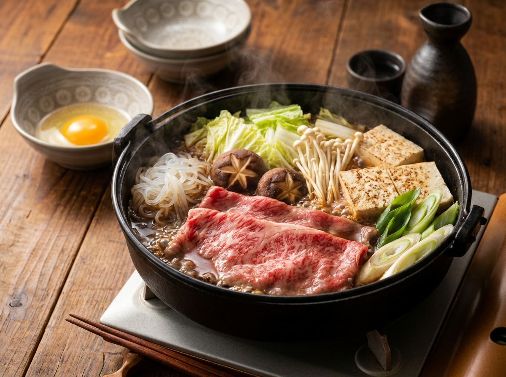

すき焼き

この料理について
甘辛い割り下で牛肉と野菜を煮込む、日本の定番鍋料理です。
卵につけて食べる、少し贅沢なごちそうメニューです。
材料
- 牛薄切り肉
- 焼き豆腐
- しらたき
- 春菊
- しいたけ など好みのきのこ
- 牛脂
- 割り下
- 卵
作り方
- 牛肉・豆腐・野菜・しらたきを食べやすい大きさに切る。
- 鍋に牛脂を熱し、牛肉を軽く焼いて取り出す。
- 同じ鍋に割り下を入れ、豆腐・しらたき・野菜を並べて煮る。
- 火が通ったら牛肉を戻し、さっと煮て好みの加減で火を止める。
- 器に割った生卵を用意し、具材を卵につけながら食べる。
ホーム